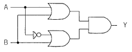
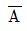
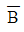
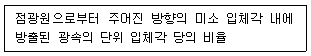

항로표지기사 (2014-08-17 기출문제)
1과목: 항로표지일반
1. IALA B지역에서 우현측 우선항로표지에 적용되는 등질(설치시)는?
- 초급섬광
- 복합군섬광
- 명암광
- 장섬광
(정답률: 알수없음)

2. 항로표지 설계 시 파랑관측자료 또는 파랑추산 자료가 없을 때 외해로부터 파의 영향을 받는 지점의 파 주기는?
- 0.8sec
- 10.0sec
- 12.0sec
- 14.0sec
(정답률: 알수없음)
3. 백색 연속 초급섬광 또는 연속 급섬광의 등질을 사용하는 항로표지는?
- 동방위표지
- 북방위표지
- 서방위표지
- 고립장해표지
(정답률: 알수없음)
4. 다음 선위 오차 중 계통오차에 포함되지 않는 것은?
- 이론적 오차
- 불규칙 오차
- 기계적 오차
- 개인적 오차
(정답률: 알수없음)
5. 풍압차나 유압차가 있을 때 진자오선과 선수미선이 이루는 각은?
- 시침로
- 진침로
- 자침로
- 자침로
(정답률: 알수없음)
6. 조석과 해수면의 변화에 대한 설명으로 거리가 먼 것은?
- 조석현상은 달과 지구 사이의 인력과 원심력의 차이에 의해 발생한다.
- 달의 바로 밑 지표면 수역에 대한 직각방향의 수역은 저조가 발생한다.
- 달 위치의 반대쪽 지표면 수역은 인력보다 원심력이 커서 저조가 발생한다.
- 달 위치 바로 아래 지표면의 수역은 원심력보다 인력이 커서 고조가 된다.
(정답률: 알수없음)
7. 해도에 표기된 sh기호의 의미는?
- 해초
- 굴
- 조개껍질
- 망간
(정답률: 알수없음)
8. 항로표지 설계 시 파압력 계산에 적용되는 정 수면은?
- 최고고조면
- 평균수면
- 기본수준면
- 평균고조면
(정답률: 알수없음)
9. 항해하는 선박에서 암초나 천소 등 장해물의 존재나 항로를 표시하기 위해 침추를 해저에 정치하여 해면상에 뜨게 한 구조물로서 등광을 발하지 않고 주로 주간에만 이용하는 것은?
- 등대
- 부표
- 등표
- 등부표
(정답률: 알수없음)
10. 조석의 변화에서 저조나 고조가 되었을 때 순간적으로 해면의 승강이 매우 느려 정지한 것과 같이 보이는 상태는?
- 창조
- 정조
- 조차
- 이류
(정답률: 알수없음)
11. 점장도법에 대한 설명으로서 거리가 먼 것은?
- 항정선이 곡선으로 표시된다.
- 주로 위도 70° 이하에서 사용된다.
- 적도에서 남북으로 멀어질수록 면적이 확대되는 단점이 있다.
- 경∙위도에 의한 위치표시는 직각 좌표가 되어 사용하기 편리하다.
(정답률: 90%)
12. 축척이 5만분의 1이상이고 항만 정박지, 협수로 등 좁은 구역을 세부에 이르기까지 상세히 그린 해도로서 평면도는?
- 해안도
- 항양도
- 항박도
- 항해도
(정답률: 알수없음)
13. 등명암광, 명암광, 장섬광 매 10초 1섬광 또는 모스 부호광(A) 등질을 사용하는 항로표지는?
- 측방표지
- 안전수역표지
- 고립장해표지
- 방위표지
(정답률: 알수없음)
14. 조석의 간만에 따라 수면위에 나타났다 수중에 감추어졌다 하는 바위(간출암)의 높이를 표시하는 기준면은?
- 평균수면
- 평균저조면
- 최고고조면
- 기본수준면
(정답률: 알수없음)
15. 자이로 컴퍼스의 기본 구성요소로 거리가 먼 것은?
- 운동부
- 주동부
- 전원부
- 추종부
(정답률: 알수없음)
16. 지상에 있는 육표, 항로표지 등의 방위나 거리를 관측하거나 수심 등을 측정하여 선위를 결정하면서 항해하는 항법은?
- 천문항법
- 전파항법
- 추측항법
- 연안항법
(정답률: 알수없음)
17. 항로를 입항하면서 좌측에 사주가 길게 형성되어 있어 3마일 간격으로 등부표 5기를 설치하고자 할 때 적절한 것은?
- 홍색등부표
- 녹색등부표
- 홍백종선등부표
- 흑색등부표
(정답률: 알수없음)
18. IALA 해상부표지역(B지역)에 있어서 우현표지의 표체 도색은?
- 홍색
- 녹색
- 백색
- 흑색
(정답률: 100%)
19. 방위와 침로에 대한 설명으로 틀린 것은?
- 어느 지점을 지나는 진자오선과 자기자오선이 이루는 교각을 편차라고 한다.
- 선내에 설치된 마그네틱 컴퍼스의 남북선이 자기자오선과 일치하지 않고 이루는 교각을 자차라고 한다.
- 관측자를 지나는 진자오선과 관측자 및 목표물을 지나는 대권이 이루는 각을 진방위라 한다.
- 자기자오선과 선수미선이 이루는 각을 나침로라 한다.
(정답률: 알수없음)
20. IALA 해상부표식의 특수표지를 설치하는 경우가 아닌 것은?
- 침선용 표지
- 투기장용 표지
- 군사연습구역용 표지
- 해저케이블용 표지
(정답률: 알수없음)
2과목: 전기·전자기초
21. 예비전원으로 시설하는 축전지에서 부하에 이르는 전로에는 최소한 어떠한 기기를 설치하는 것이 적합한가?
- 전압계, 개폐기
- 개폐기, 과전류 차단기
- 전압계, 전류계
- 전류계, 전력계
(정답률: 알수없음)
22. 그림과 같은 논리회로의 출력(Y)은?

- A
- B


(정답률: 알수없음)
23. 수은전지의 음극제 아말감의 원소는?
- 흑연
- 아연
- 망간
- 나트륨
(정답률: 알수없음)
24. 황산용액에 양극으로 구리 막대, 음극으로 은 막대를 두고 전기를 통하면 은 막대는 구리색을 띤다. 이를 무엇이라고 하는가?
- 전기도금
- 이온화 현상
- 전기분해
- 분극작용
(정답률: 알수없음)
25. 1[F]의 콘덴서에 2V의 전압을 가했을 때 콘덴서에 축적된 정전에너지는 몇 [J]인가?
- 1
- 2
- 3
- 4
(정답률: 알수없음)
26. 저항 값이 10[Ω]인 니크롬선에 100[V] 전원에 연결하면 몇 [A]의 전류가 흐르는가?(오류 신고가 접수된 문제입니다. 반드시 정답과 해설을 확인하시기 바랍니다.)
- 5
- 10
- 15
- 100
(정답률: 알수없음)
27. 다음 다이오드 중 부성저항의 특성을 나타낸 것은?
- 발광 다이오드
- 터널 다이오드
- 제너 다이오드
- 쇼트키 배리어 다이오드
(정답률: 77%)
28. 다음 중 접지저항을 측정할 수 있는 계기로 가장 적합한 것은?
- 멀티테스터
- 전위차계
- 어스테스터
- 훅온미터
(정답률: 46%)
29. 타여자 발전기와 같이 전압변동률이 작고 전기화학작용 전원, 전지의 충전용으로 주로 이용되는 것은?
- 과복권 발전기
- 직권 발전기
- 분권발전기
- 복권 발전기
(정답률: 알수없음)
30. 다음 중 직류발전기 중 여자방식이 다른 것은?
- 타여자 발전기
- 직권 발전기
- 분권발전기
- 복권발전기
(정답률: 알수없음)
31. 자기에 대한 올바른 설명은?
- 강자성체에 속하는 것은 구리와 알루미늄이다.
- 오른나사의 전진하는 바양으로 전류를 흘려주면 이 나사를 돌리는 반대 방향으로 자기장(자계)이 생긴다.
- 자기장의 세기는 직각의 단위면적으로 통과하는 자속 수인 자기밀도에 반비례한다.
- 쿨롱에 법칙에 따르면, 두 자극상에 작용하는 힘은 각각의 자극의 세기의 곱에 비례하고 자극사이의 거리에 반비례한다.
(정답률: 알수없음)
32. 코일이 자속을 끊으면 코일에 기전력이 발생하여 전류가 흐르는 현상을 무엇이라 하는가?
- 정전기
- 자기유도
- 상호유도
- 전자유도
(정답률: 알수없음)
33. 60[Hz], 2000[kVA]의 발전기의 회전수가 900 [rpm]일 때 이 발전기의 극수는?
- 4
- 6
- 8
- 10
(정답률: 알수없음)
34. 6[F]와 3[F]의 콘덴서를 직렬로 접속하면 합성 커패시턴스는 몇[F]인가?
- 2
- 3
- 6
- 8
(정답률: 70%)
35. 직류 전용으로 사용되는 계측기의 종류는?
- 유도형
- 가동 코일형
- 진동형
- 정류형
(정답률: 알수없음)
36. 브리지 정류기에서 입력전압의 정(+)의 반주기 동안 다이오드의 상태는?
- 1개의 다이오드만 순방향 바이어스가 된다.
- 2개의 다이오드만 순방향 바이어스가 된다.
- 3개의 다이오드만 순방향 바이어스가 된다.
- 모든 다이오드가 역방향 바이어스가 된다.
(정답률: 알수없음)
37. 전선의 저항과 같은 저 저항을 측정하기에 가장 알맞은 것은?
- 전압 강하법
- 전위차계법
- 휘트스톤 브리지법
- 켈빈더블 브리지법
(정답률: 알수없음)
38. 동기발전기에서 앞선 전류가 흐를 때의 전기자 반작용은?
- 속도 상승
- 감자작용
- 증자작용
- 효율 상승
(정답률: 알수없음)
39. 대지전압 100[V]의 옥내 전로에서 분기회로의 절연저항은 최저 몇 [MΩ] 인가?
- 0.1
- 0.2
- 0.3
- 0.4
(정답률: 60%)
40. 단자전압 220[V], 1차 입력 10[kW], 역률 75[%]의 3상 유도 전동기가 있다. 전부하의 전류는 약 몇 [A]인가?
- 38.5
- 43.3
- 52.5
- 61.4
(정답률: 알수없음)
3과목: 광파·음파표지
41. 500kHz~540kHz 두 음에서 발사하는 맥놀이 주기[s]는?
- 0.25
- 0.4
- 0.8
- 1.2
(정답률: 알수없음)
42. 다음 내용이 설명하는 것은?

- 광도
- 휘도
- 조도
- 광속
(정답률: 알수없음)
43. 해사안전법 또는 개항질서법 상에 규정된 항로로서 자연조건, 교통조건, 안전성, 경제성을 고려하여 설정된 항로로서 법적 강제력이 있는 항로는?
- 권고항로
- 법적항로
- 추천항로
- 계획항로
(정답률: 91%)
44. 다음 항로표지의 종류 중 IALA 해상부표식에 있어서 급섬광의 등질을 사용할 수 있는 것은?
- 측방표지
- 특수표지
- 동방위표지
- 고립장해표지
(정답률: 알수없음)
45. 음파면과 수직한 직선으로 음이 전달되는 경로를 나타내는 선은?
- 주기
- 평면파
- 음파
- 음선
(정답률: 알수없음)
46. 다음 중 광도의 단위로 옳은 것은?
- lx
- cd
- nm
- lm
(정답률: 알수없음)
47. 파장이 500nm인 빛이 굴절률 1.5인 유리 속을 진행 할 때 이 유리 속에서의 빛의 속도[m/s]는?
- 2×108
- 4×108
- 5×108
- 6×108
(정답률: 알수없음)
48. 대기 중에서 음파의 속도가 0°C에서 331.5 [m/s]인 경우 대기 온도가 10°C 일 때 속도 [m/s]는?
- 315.6
- 326.6
- 337.6
- 348.6
(정답률: 알수없음)
49. 압축공기에 의하여 취명부(피스톤과 실린더)를 취명시키는 방법의 음파표지는?
- 레이콘
- 다이아폰
- 모터사이렌
- 에어사이렌
(정답률: 알수없음)
50. 다음 중 마스킹효과에 대한 설명으로 옳은 것은?
- 가청주파수의 맥동현상이다.
- 음압의 온도에 따른 변화를 말한다.
- 어떤 소리가 또 다른 소리를 들을 수 있는 능력을 감소시키는 현상이다.
- 음향의 회절과 굴절현상이다.
(정답률: 알수없음)
51. 수심 45m, 6Knot의 강조류인 통항로가 있다. 설치하기에 적절한 표준형은?
- LL-30
- LL-26
- LL-24
- LL-26(M)
(정답률: 알수없음)
52. 다음 중 무신호기의 종류가 아닌 것은?
- 에어사이렌(Air siren)
- 다이아폰(Diaphone)
- 레이더비콘(Radar beacon)
- 모터사이렌(Motor siren)
(정답률: 알수없음)
53. 다음 중 지리학적 광달거리의 요소가 아닌 것은?
- 표지등화 및 항해자의 수면상 눈의 높이
- 지구의 곡률
- 대기굴절
- 표지등화의 광도
(정답률: 알수없음)
54. “빛의 최소시간이 걸리는 경로를 따라 진행한다”와 관련된 광학 이론은?
- 호이겐스 원리
- 페르마의 원리
- 푸리에 원리
- 파스발 에너지 원리
(정답률: 알수없음)
55. 배광곡선에 나타나는 등광의 상∙하 양 끝이 2점이 빛 중심에 대하여 뻗는 각도를 무엇이라 하는가?
- 발산각
- 굴절각
- 회절각
- 입사각
(정답률: 알수없음)
56. 국제항로표지협회(IALA)에서 항로표지의 등광에 사용하도록 권고한 등질의 약기가 틀린 것은?
- 연성부동섬광 - FFI
- 명암광 -Oc
- 모스 부호광 -Mo
- 초급섬광 - Q
(정답률: 알수없음)
57. 라우드니스 레벨에서 1sone은 몇 phon인가?
- 20
- 30
- 40
- 50
(정답률: 알수없음)
58. 출력파워가 10W이고 기준파워가 10-12W이면 음향 파워레벨[dB]은?
- 100
- 120
- 130
- 140
(정답률: 알수없음)
59. 1주기 내에 2초 이상의 명간이 1개 있는 섬광의 등질은?
- 군명암광
- 장섬광
- 초급섬광
- 단명암광
(정답률: 알수없음)
60. 광파표지 종류 중 암초, 수심이 얕은 곳에 설치된 등화를 갖춘 탑 모양의 구조물은?
- 등대
- 등표
- 도등
- 분호등
(정답률: 알수없음)
4과목: 전파표지 및 시스템이용
61. 전파의 성분 중 거리에 따라 가장 감쇠가 급격한 것은?
- 정전계
- 복사계
- 전자계
- 유도계
(정답률: 알수없음)
62. GPS 측위 오차중 구조적 오차에 해당하지 않는 것은?
- 위성시계 오차
- 전리층 오차
- 대류층 오차
- 기하학적 오차
(정답률: 알수없음)
63. 선박으로부터 의뢰를 받아 그 선박의 발사전파의 방향을 측정해서 전파의 방위를 다시 알려주는 무선국은?
- 무선 방향 탐지국
- 무지향성 무선표지국
- 지향성 회전식 무선표지국
- 지향성 무선표지국
(정답률: 77%)
64. GPS 위성에서 발사된 신호가 해면이나 구조물 등에 반사되어 수신파형을 왜곡시키고 의사거리 측정의 정도를 낮추는 것은?
- 고도 오차
- 멀티패스에 의한 오차
- 대류권 지연 오차
- 수신기 오차
(정답률: 알수없음)
65. 전파의 회절현상에 대한 설명으로 거리가 먼 것은?
- 초단파대에서 발생하지 않는다.
- 주파수가 낮을수록 심하다.
- 중장파대에서 많이 일어난다.
- 구면 대지에서는 회절 손실이 크다.
(정답률: 알수없음)
66. 기선 상에 있는 종국이 LORAN-C 감시용 수신기로부터 정보를 이용한 기선 통제는?
- Alpha 통제
- Bravo 통제
- Charlie 통제
- Delta 통제
(정답률: 알수없음)
67. 마이크로파용 안테나의 특징으로 옳지 않는 것은?
- 고지향성이다.
- 파장이 짧기 때문에 크기를 소형으로 하여 고이득을 얻을 수 있다.
- 이득이나 지향성은 안테나 개구 면적에 반비례한다.
- 송수신 안테나의 결합도를 작게 할 수 있어 송수신기를 동일 장소에 설치할 수 있다.
(정답률: 알수없음)
68. 레이더에서 마이크로파를 만들어내는 곳은?
- 스캐너
- 마그네트론
- 검파기
- C.R.T
(정답률: 알수없음)
69. DGPS의 신뢰성 확보를 위한 무결성 감시시스템의 RSIM(Reference Station and Integrity Monitoring)의 구성요소로 거리가 먼 것은?
- 제어국
- 기준국
- 송신국
- 감시국
(정답률: 40%)
70. 레이더의 거짓상 중 전파가 자선과 물표 사이를 2회 이상 왕복하여 실제 하나인 물표의 영상이 등간격으로 여러 개 나타나는 것은?
- 간접반사
- 2차 소인반사
- 거울면 반사
- 다중반사
(정답률: 알수없음)
71. 특수신호표지에 속하지 않는 것은? (문제 오류로 실제 시험에서는 1, 2번이 정답처리 되었습니다. 여기서는 1번을 누르면 정답 처리 됩니다.)
- 조류신호표지
- 선박통항신호표지
- 해양기상신호표지
- 전파신호표지
(정답률: 알수없음)
72. 조류신호의 업무로 거리가 먼 것은?
- 조류 방향표시
- 조류 속도표시
- 조류 량 표시
- 조류 예측에 대한 정보표시
(정답률: 70%)
73. 사용파장을 λ[m]라 할 때 폴디드(folded) 다이폴 안테나의 실효길이는?
- λ/π
- 2λ/π
- λ/2π
- 3λ/2π
(정답률: 알수없음)
74. 하나이상의 주파수 밴드로 코드화 된 신호를 지속적으로 송신하고 활동하는 위성 군을 기초로 하는 것은?
- FAA
- LDC
- GNSS
- SAM
(정답률: 80%)
75. 변화하고 있는 자계는 전계를 발생시키고 반대로 변화하고 있는 전계는 자계를 발생시키는 사실을 어느 방정식에서 알 수 있는가?
- Maxwell 방정식
- Lentz 방정식
- poynting 방정식
- Laplace 방정식
(정답률: 알수없음)
76. 가시거리 통신에서 두 지점 간 자유공간 전파손실이 130dB일 때, 이 상태에서 주파수를 1/4로 줄이고 거리를 2배로 하면 전파손실[dB]은?
- 95
- 102
- 124
- 136
(정답률: 알수없음)
77. 주파수 300[KHz]의 전파를 방사하는 λ/4 접지 안테나의 실효고는 약 몇[m]인가?
- 80
- 100
- 160
- 200
(정답률: 알수없음)
78. 지상파 전파경로에 해당되지 않는 것은?
- 지표파
- 직접파
- 전리층 반사파
- 대지 반사파
(정답률: 알수없음)
79. DGPS 주파수와 신호형태로 적합한 것은?
- 90~100[kHz] / 펄스파
- 90~100[MHz] / 펄스파
- 283~325[kHz] / 지속파
- 283~325[MHz] / 지속파
(정답률: 알수없음)
80. height pattern 이란?
- 직접파와 회절파의 간섭에 의하여 생성되는 그래프
- 송수신 안테나와 수신점까지의 거리에 따른 그래프
- 수신안테나의 높이에 따라 수신 전계 강도가 달라지는 그래프
- 전파가시거리의 그래프
(정답률: 80%)